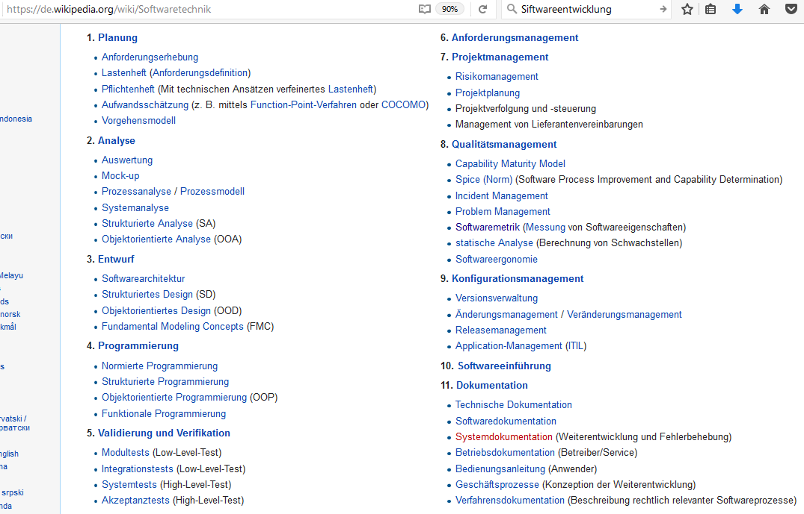
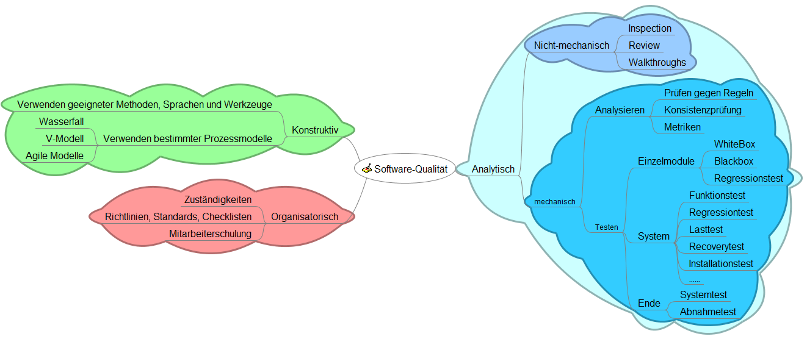

Softwareentwicklung!¶
Mit zunehmender Komplexität der durch Software zu lösenden Probleme wurde es schon in den frühen Jahren der Programmierkunst (Ende 1960er/Anfang der 1970er Jahre) klar, dass man die Programmierung „organisieren“ muss. Software Engineering (SWE) beschäftigt sich deshalb mit der Herstellung oder Entwicklung von Software, der Organisation und Modellierung der zugehörigen Datenstrukturen und dem Betrieb von Softwaresystemen.
Dieses Dokument greift aus der Vielzahl der möglichen Themen die Aspekte Vorgehensmodelle und Sicherung der Softwarequaliät heraus
